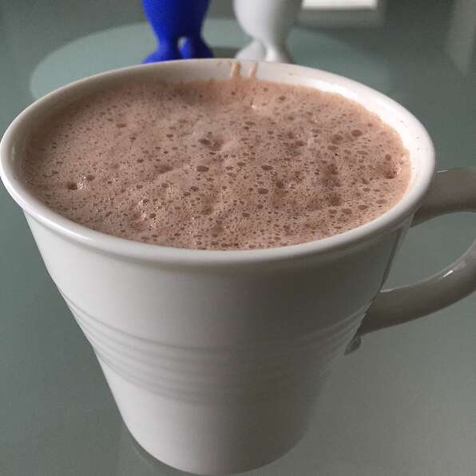

Vegan Hot Chocolate

Description
This is an easy recipe for vegan hot cholocate to keep you warm in the winter. It requires minimal ingredients and effort so there's less making and more sipping!
Ingredients:
- 1 cup water
- 1/4 cup white sugar
- 1/4 cup unsweetened cocoa powder
- 3 cups soy milk
Steps:
- Bring water, sugar, and cocoa to a boil in a small saucepan.
- Pour in soy milk and stir until combined and heated through, about 3 minutes.
- Pour in cup of your choice and enjoy the hot deliciousness!